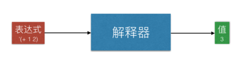
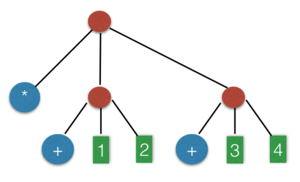

如何写一个解释器
Table of Contents
什么是解释器
说白了，解释器跟计算器差不多。解释器是一个函数，你输入一个“表达式”，它就输出一个 “值”，像这样：

比如，你输入表达式 '(+ 1 2) ，它就输出值，整数3。表达式是一种“表象”或者“符号”，而值却更加接近“本质”或者“意义”。解释器从符号出发，得到它的意义，这也许就是它为什么叫做“解释器”
需要注意的是，表达式是一个数据结构，而不是一个字符串。我们用一种叫“S表达式”的结构来存储表达式。比如表达式 '(+ 1 2) 其实是一个链表（list），它里面的内容是三个符号（symbol）：+, 1 和 2，而不是字符串"(+ 1 2)"
从S表达式这样的“结构化数据”里提取信息，方便又可靠，而从字符串里提取信息，麻烦而且容易出错。Scheme（Lisp）语言里面大量使用结构化数据，少用字符串，这就是 Lisp 系统比 Unix 系统先进的地方之一
从计算理论的角度讲，每个程序都是一台机器的“描述”，而解释器就是在“模拟”这台机器的运转，也就是在进行“计算”。所以从某种意义上讲，解释器就是计算的本质。当然，不同的解释器就会带来不同的计算。事实上CPU也是一个解释器，它专门解释执行机器语言
抽象语法树
我们用S表达式所表示的代码，本质上是一种叫做“树”的数据结构。更具体一点，这叫做“抽象语法树”。下文为了简洁，我们省略掉“抽象”两个字，就叫它“语法树”
跟普通的树结构一样，语法树里的节点，要么是一个“叶节点”，要么是一颗“子树”。叶节点是不能再细分的“原子”，比如数字，字符串，操作符，变量名。而子树是可以再细分的“结构”，比如算术表达式，函数定义，函数调用，等等
举个简单的例子，表达式 '(* (+ 1 2) (+ 3 4))，就对应如下的语法树结构：

其中，*，两个+，1，2，3，4 都是叶节点，而那三个红色节点，都表示子树结构：'(+ 1 2)，'(+ 3 4)，'(* (+ 1 2) (+ 3 4))
树遍历算法
在基础的数据结构课程里，我们都学过二叉树的遍历操作，也就是所谓先序遍历，中序遍历和后序遍历。语法树跟二叉树，其实没有很大区别，所以你也可以在它上面进行遍历。解释器的算法，就是在语法树上的一种遍历操作。
下面这个函数，名叫tree-sum，它对二叉树进行“求和”，把所有节点里的数加在一起，返回它们的和
#lang racket (define tree-sum (lambda (exp) (match exp ; 对输入exp进行模式匹配 [(? number? x) x] ; exp是一个数x吗？如果是，那么返回这个数x [`(,e1 ,e2) ; exp是一个含有两棵子树的中间节点吗？ (let ([v1 (tree-sum e1)] ; 递归调用tree-sum自己，对左子树e1求值 [v2 (tree-sum e2)]) ; 递归调用tree-sum自己，对右子树e2求值 (+ v1 v2))]))) ; 返回左右子树结果v1和v2的和
测试结果：
(tree-sum '(1 2)) ;; => 3 (tree-sum '(1 (2 3))) ;; => 6 (tree-sum '((1 2) 3)) ;; => 6 (tree-sum '((1 2) (3 4))) ;; => 10
注意：这是一颗二叉树，所以不会含有长度超过2的子树，你不需要考虑像 ((1 2) (3 4 5)) 这类情况。需要考虑的例子是像这样：(1 2)，(1 (2 3)), ((1 2) 3) ((1 2) (3 4))
这个算法很简单，我们可以把它用文字描述如下：
- 如果输入exp是一个数，那就返回这个数
- 如果exp是像 (,e1 ,e2) 这样的子树，那么分别对 e1 和 e2 递归调用 tree-sum，进行求和，得到 v1 和 v2，然后返回 v1 + v2 的和
模式匹配
上面的代码里面使用的是Racket的模式匹配。这个例子用if或者cond其实也可以，但要把这代码扩展成一个解释器，所以提前使用了模式匹配。这样跟后面的代码对比的时候，就更容易看出规律来
模式匹配的形式一般是这样：
(match x [模式 结果] [模式 结果] ... ... )
它先对x求值，然后根据值的结构来进行分支。每个分支由两部分组成，左边是一个模式，右边是一个结果。整个match语句的语义是这样：从上到下依次考虑，找到第一个可以匹配 x 的值的模式，返回它右边的结果。左边的模式在匹配之后，可能会绑定一些变量，这些变量可以在右边的表达式里使用
模式匹配是一种分支语句，它在逻辑上就是Scheme的cond表达式，或者Java的嵌套条件语句 if … else if … else …。然而跟条件语句里的“条件”不同，每条 match 语句左边的模式，可以准确而形象地描述数据结构的形状，而且可以在匹配的同时，对结构里的成员进行“绑定”。这样我们可以在右边方便的访问结构成员，而不需要使用访问函数或者foo.x这样的属性语法。而且模式可以有嵌套的子结构，所以它能够一次性的表示复杂的数据结构
上面的代码里用了这样一个match表达式：
(match exp [(? number? x) x] [`(,e1 ,e2) (let ([v1 (tree-sum e1)] [v2 (tree-sum e2)]) (+ v1 v2))])
第二行里面的'(,e1 ,e2)是一个模式，它被用来匹配exp的值。如果exp是'(1 2)，那么它与'(,e1 ,e2)匹配的时候，就会把e1绑定到'1，把e2绑定到'2。这是因为它们结构相同：
`(,e1 ,e2) '( 1 2)
说白了，模式就是一个可以含有“名字”（像e1和e2）的结构，像'(,e1 ,e2)。我们拿这个带有名字的结构，去匹配实际数据，像'(1 2)。当它们一一对应之后，这些名字就被绑定到数据里对应位置的值
第一行的“模式”比较特殊，(? number? x)表示的，其实是一个普通的条件判断，相当于(number? exp)，如果这个条件成立，那么它把exp的值绑定到 x，这样右边就可以用x来指代exp。对于无法细分的结构（比如数字，布尔值），你只能用这种方式来“匹配”。看起来有点奇怪，不过习惯了就好了
模式匹配对解释器和编译器的书写相当有用，因为程序的语法树往往具有嵌套的结构。不用模式匹配的话，往往要写冗长，复杂，不直观的代码，才能描述出期望的结构。而且由于结构的嵌套比较深，很容易漏掉边界情况，造成错误。模式匹配可以直观的描述期望的结构，避免漏掉边界情况，而且可以方便的访问结构成员
计算器
计算器也是一种解释器，只不过它只能处理算术表达式。我们的下一个目标，就是写出一个计算器。如果你给它'(* (+ 1 2) (+ 3 4))，它就输出 21。可不要小看这个计算器，稍后我们把它稍加改造，就可以得到一个更多功能的解释器
上面的代码里，我们利用递归遍历，对树里的数字求和。那段代码里，其实已经隐藏了一个解释器的框架。你观察一下，一个算术表达式 '(* (+ 1 2) (+ 3 4))，跟二叉树 '((1 2) (3 4)) 有什么不同？发现没有，这个算术表达式比起二叉树，只不过在每个子树结构里多出了一个操作符：一个 * 和两个 + 。它不再是一棵二叉树，而是一种更通用的树结构
这点区别，也就带来了二叉树求和与解释器算法的区别。对二叉树进行求和的时候，在每个子树节点，我们都做加法。而对表达式进行解释的时候，在每一个子树节点，我们不一定进行加法。根据子树的“操作符”不同，我们可能会选择加，减，乘，除四种操作。
好了，下面就是这个计算器的代码。它接受一个表达式，输出一个数字作为结果：
#lang racket ; 声明用 Racket 语言 (define calc (lambda (exp) (match exp ; 分支匹配：表达式的两种情况 [(? number? x) x] ; 是数字，直接返回 [`(,op ,e1 ,e2) ; 匹配提取操作符op和两个操作数e1,e2 (let ([v1 (calc e1)] ; 递归调用 calc 自己，得到 e1 的值 [v2 (calc e2)]) ; 递归调用 calc 自己，得到 e2 的值 (match op ; 分支匹配：操作符 op 的 4 种情况 ['+ (+ v1 v2)] ; 如果是加号，输出结果为 (+ v1 v2) ['- (- v1 v2)] ; 如果是减号，乘号，除号，相似的处理 ['* (* v1 v2)] ['/ (/ v1 v2)]))])))
测试结果：
(calc '(+ 1 2)) ;; => 3 (calc '(* 2 3)) ;; => 6 (calc '(* (+ 1 2) (+ 3 4))) ;; => 21
跟之前的二叉树求和代码比较一下，你会发现它们惊人的相似，因为解释器本来就是一个树遍历算法。不过你发现它们有什么不同吗？它们的不同点在于：
- 算术表达式的模式里面，多出了一个“操作符”（op）叶节点：(,op ,e1 ,e2)
对子树e1和e2分别求值之后，我们不是返回 (+ v1 v2)，而是根据op的不同，返回不同的结果：
(match op ['+ (+ v1 v2)] ['- (- v1 v2)] ['* (* v1 v2)] ['/ (/ v1 v2)])
R2：一个很小的程序语言
实现了一个计算器，现在让我们过渡到一种更强大的语言。为了方便称呼，我给它起了一个叫R2。R2 起之前的计算器，只多出四个元素，它们分别是：变量，函数，绑定，调用。再加上之前介绍的算术操作，我们就得到一个很简单的程序语言，它只有5种不同的构造。用Scheme的语法，这5种构造看起来就像这样：
- 变量：x
- 函数：(lambda (x) e)
- 绑定：(let ([x e1]) e2)
- 调用：(e1 e2)
- 算术：(• e1 e2)
其中，• 是一个算术操作符，可以选择 +, -, *, / 其中之一
一般程序语言还有很多其它构造，可是一开头就试图去实现所有那些，只会让人糊涂。最好是把这少数几个东西搞清楚，确保它们正确之后，才慢慢加入其它元素
这些构造的语义，跟Scheme里面的同名构造几乎一模一样。如果你不清楚什么是”绑定“，那你可以把它看成是普通语言里的”变量声明“
柯里化
需要注意的是，跟一般语言不同，我们的函数只接受一个参数。这不是一个严重的限制，因为在我们的语言里，函数可以被作为值传递，也就是所谓“first-class function”。所以你可以用嵌套的函数定义来表示有两个以上参数的函数
举个例子， (lambda (x) (lambda (y) (+ x y))) 是个嵌套的函数定义，它也可以被看成是有两个参数（x 和 y）的函数，这个函数返回 x 和 y 的和。当这样的函数被调用的时候，需要两层调用，就像这样：
(((lambda (x) (lambda (y) (+ x y))) 1) 2) ;; => 3
这种做法在PL术语里面，叫做柯里化（currying）。看起来啰嗦，但这样我们的解释器可以很简单。等我们理解了基本的解释器，再实现真正的多参数函数也不迟。
另外，我们的绑定语法(let ([x e1]) e2)，比起Scheme的绑定也有一些局限。我们的let只能绑定一个变量，而Scheme可以绑定多个，像这样(let ([x 1] [y 2]) (+ x y))。这也不是一个严重的限制，因为可以啰嗦一点，用嵌套的 let 绑定：
(let ([x 1]) (let ([y 2]) (+ x y)))
R2 的解释器
下面是我们今天要完成的解释器，它可以运行一个R2程序：
#lang racket ;;; 以下三个定义 env0, ext-env, lookup 是对环境（environment）的基本操作： ;; 空环境 (define env0 '()) ;; 扩展。对环境 env 进行扩展，把 x 映射到 v，得到一个新的环境 (define ext-env (lambda (x v env) (cons `(,x . ,v) env))) ;; 查找。在环境中 env 中查找 x 的值。如果没找到就返回 #f (define lookup (lambda (x env) (let ([p (assq x env)]) (cond [(not p) #f] [else (cdr p)])))) ;; 闭包的数据结构定义，包含一个函数定义 f 和它定义时所在的环境 (struct Closure (f env)) ;; 解释器的递归定义（接受两个参数，表达式 exp 和环境 env） ;; 共 5 种情况（变量，函数，绑定，调用，数字，算术表达式） (define interp (lambda (exp env) (match exp ; 对exp进行模式匹配 [(? symbol? x) ; 变量 (let ([v (lookup x env)]) (cond [(not v) (error "undefined variable" x)] [else v]))] [(? number? x) x] ; 数字 [`(lambda (,x) ,e) ; 函数 (Closure exp env)] [`(let ([,x ,e1]) ,e2) ; 绑定 (let ([v1 (interp e1 env)]) (interp e2 (ext-env x v1 env)))] [`(,e1 ,e2) ; 调用 (let ([v1 (interp e1 env)] [v2 (interp e2 env)]) (match v1 [(Closure `(lambda (,x) ,e) env-save) (interp e (ext-env x v2 env-save))]))] [`(,op ,e1 ,e2) ; 算术表达式 (let ([v1 (interp e1 env)] [v2 (interp e2 env)]) (match op ['+ (+ v1 v2)] ['- (- v1 v2)] ['* (* v1 v2)] ['/ (/ v1 v2)]))]))) ;; 解释器的“用户界面”函数。它把 interp 包装起来，掩盖第二个参数，初始值为 env0 (define r2 (lambda (exp) (interp exp env0)))
基本算术操作
算术操作一般都是程序里最基本的构造，它们不能再被细分为多个步骤，所以我们先来看看对算术操作的处理。以下就是R2解释器处理算术的部分，它是interp的最后一个分支：
(match exp ... ... [`(,op ,e1 ,e2) (let ([v1 (interp e1 env)] ; 递归调用 interp 自己，得到 e1 的值 [v2 (interp e2 env)]) ; 递归调用 interp 自己，得到 e2 的值 (match op ; 分支：处理操作符 op 的 4 种情况 ['+ (+ v1 v2)] ; 如果是加号，输出结果为 (+ v1 v2) ['- (- v1 v2)] ; 如果是减号，乘号，除号，相似的处理 ['* (* v1 v2)] ['/ (/ v1 v2)]))])
你可以看到它几乎跟刚才写的计算器一模一样，不过现在interp的调用多了一个参数 env 而已。这个env是所谓“环境”
数字
对数字的解释很简单，把它们原封不动返回就可以了
[(? number? x) x]
变量
变量的产生，是数学史上的最大突破之一。因为变量可以被绑定到不同的值，从而使函数的实现成为可能。比如数学函数f(x) = x * 2，其中x是一个变量，它把输入的值传递到函数体x * 2 里面。如果没有变量，函数就不可能实现
对变量最基本的操作，是对它的“绑定”（binding）和“取值”（evaluate）。什么是绑定呢？ 拿上面的函数f(x)作为例子。当我们调用f(1)时，函数体里面的x等于1，所以x * 2的值是2，而当我们调用f(2)时，函数体里面的x等于2，所以x * 2的值是4。这里，两次对 f 的调用，分别对x进行了两次绑定。第一次x被绑定到了1，第二次被绑定到了2
环境
我们的解释器只能一步一步的做事情。比如，当它需要求f(1)的值的时候，它分成两步操作：
- 把x绑定到1，这样函数体内才能看见这个绑定
- 进入f的函数体，对x * 2 进行求值
在我们的解释器里，用于处理环境的代码如下：
;; 空环境 (define env0 '()) ;; 对环境 env 进行扩展，把 x 映射到 v (define ext-env (lambda (x v env) (cons `(,x . ,v) env))) ;; 取值。在环境中 env 中查找 x 的值 (define lookup (lambda (x env) (let ([p (assq x env)]) (cond [(not p) #f] [else (cdr p)]))))
这里我们用一种最简单的数据结构，association list来表示环境。看起来像这个样子：((x . 1) (y . 2) (z . 5))。它是一个两元组（pair）的链表，左边的元素是key，右边的元素是value。写得直观一点就是：
((x . 1) (y . 2) (z . 5))
查表操作就是从头到尾搜索，如果左边的key是要找的变量，就返回整个pair。效率很低，但是足够完成我们现在的任务
环境扩展
扩展一个环境。比如，如果原来的环境env1是((y . 2) (x . 1)) 那么(ext-env x 3 env1)，就会返回((x . 3) (y . 2) (x . 1))。也就是把(x . 3)加到env1的最前面去
那我们什么时候需要扩展环境呢？当我们进行绑定的时候。绑定可能出现在函数调用时，也可能出现在let绑定时。我们选择的数据结构，使得环境自然而然的具有了作用域（scope）的特性
环境其实是一个堆栈。内层的绑定，会出现在环境的最上面，这就是在“压栈”。这样我们查找变量的时候，会优先找到最内层定义的变量：
(let ([x 1]) ; env='()。绑定x到1。 (let ([y 2]) ; env='((x . 1))。绑定y到2。 (let ([x 3]) ; env='((y . 2) (x . 1))。绑定x到3。 (+ x y)))) ; env='((x . 3) (y . 2) (x . 1))。查找x，得到3；查找y，得到2。 ;; => 5
这段代码会返回5。这是因为最内层的绑定，把(x . 3)放到了环境的最前面，这样查找 x 的时候，我们首先看到(x . 3)，然后就返回值3。之前放进去的(x . 1) 仍然存在，但是我们先看到了最上面的那个(x . 3)，所以它被忽略了。
这并不等于说(x . 1) 就可以被改写或者丢弃，因为它仍然是有用的。你只需要看一个稍微不同的例子，就知道这是怎么回事：
(let ([x 1]) ; env='()。绑定x到1。 (+ (let ([x 2]) ; env='((x . 1))。绑定x到2。 x) ; env='((x . 2) (x . 1))。查找x，得到2。 x)) ; env='((x . 1))。查找x，得到1。 ;; => 3 ; 两个不同的x的和，1+2等于3。
这个例子会返回3。它是第3行和第4行里面两个x的和。由于第3行的x处于内层let里面，那里的环境是((x . 2) (x . 1))，所以查找x的值得到2。第4行的x在内层let外面，但是在外层let里面，那里的环境是((x . 1))，所以查找x的值得到1。这很符合直觉，因为x总是找到最内层的定义
值得注意的是，环境被扩展以后，形成了一个新的环境，而原来的环境并没有被改变。比如，上面的((y . 2) (x . 1))并没有删除或者修改，只不过是被“引用”到一个更大的列表里去了
这样不对已有数据进行修改的数据结构，叫做“函数式数据结构”。函数式数据结构只生成新的数据，而不改变或者删除老的。它可能引用老的结构，然而却不改变老的结构。这种“不修改”的性质，在我们的解释器里是很重要的，因为当我们扩展一个环境，进入递归，返回之后，外层的代码必须仍然可以访问原来外层的环境
当然我们也可以用另外的，更高效的数据结构（比如平衡树，串接起来的哈希表）来表示环境。如果你学究一点，甚至可以用函数来表示环境。这里为了代码简单，我们选择了最笨，然而正确，容易理解的数据结构
变量的取值
了解了变量，函数和环境，我们来看看解释器对变量的“取值”操作，也就是match的第一种情况：
[(? symbol? x) (lookup x env)]
这就是在环境中，沿着从内向外的“作用域顺序”，查找变量的值
这里的(? symbol? x)是一种特殊的模式，它使用函数symbol?来判断输入是否是一个符号，如果是，就把它绑定到x，然后你就可以在右边用x来指称这个输入
绑定
现在我们来看看对let绑定的解释：
[`(let ([,x ,e1]) ,e2) (let ([v1 (interp e1 env)]) ; 解释右边表达式e1，得到值v1 (interp e2 (ext-env x v1 env)))] ; 把(x . v1)扩充到环境顶部，对e2求值
通过代码里的注释，你也许已经可以理解它在做什么。我们先对表达式e1求值，得到v1。然后我们把(x . v1)扩充到环境里，这样(let ([x e1]) …) 内部都可以看到x的值。然后我们使用这个扩充后的环境，递归调用解释器本身，对let的主体e2求值。它的返回值就是这个 let 绑定的值
函数
下面我们准备谈谈函数定义和调用。对函数的解释是一个微妙的问题，很容易弄错，这是由于函数体内也许会含有外层的变量，叫做“自由变量”。所以在分析函数的代码之前，我们来了解一下不同的“作用域”规则
Lexical Scoping 和 Dynamic Scoping
我们举个例子来解释这个问题。下面这段代码，它的值应该是多少呢？
(let ([x 2]) (let ([f (lambda (y) (* x y))]) (let ([x 4]) (f 3))))
在这里，f函数体 (lambda (y) (* x y))里的那个 x，就是一个“自由变量”。x并不是这个函数的参数，也不是在这个函数里面定义的，所以我们必须到函数外面去找x的值。
我们的代码里面，有两个地方对x进行了绑定，一个等于2，一个等于4，那么x到底应该是指向哪一个绑定呢？这似乎无关痛痒，然而当我们调用(f 3)的时候，严重的问题来了。f的函数体是 (* x y)，我们知道y的值来自参数3，可是x的值是多少呢？ 它应该是2，还是4呢？
在历史上，这段代码可能有两种不同的结果，这种区别一直延续到今天。如果你在Racket里面写以上的代码，它的结果是6。而在emacs-lisp中它的结果是12
Racket的方式叫做lexical scoping，而Emacs的方式叫做dynamic scoping
那么哪一种方式更好呢？或者用哪一种都无所谓？答案：dynamic scoping是非常错误的做法。历史的教训告诉我们，它会带来许许多多莫名其妙的bug，导致dynamic scoping的语言几乎完全没法用。原因在于，像(let ((x 4)) …)这样的变量绑定，只应该影响它内部“看得见”的 x 的值。当我们看见(let ((x 4)) (f 3))的时候，并没有在let的内部看见任何叫“x” 的变量，所以我们“直觉”的认为，(let ((x 4)) …)对x的绑定，不应该引起(f 3)的结果变化。然而对于dynamic scoping，我们的直觉却是错误的。因为f的函数体里面有一个x，虽然我们没有在(f 3)这个调用里面看见它，然而它却存在于f定义的地方。要知道，f定义的地方也许隔着几百行代码，甚至在另外一个文件里面。而且调用函数的人凭什么应该知道， f的定义里面有一个自由变量，它的名字叫做x？所以 dynamic scoping在设计学的角度来看，是一个反人类的设计
相反，lexical scoping却是符合人们直觉的。虽然在(let ((x 4)) (f 3))里面，我们把x绑定到了4，然而f的函数体并不是在那里定义的，我们也没在那里看见任何x，所以f的函数体里面的x，仍然指向我们定义它的时候看得见的那个x，也就是最上面的那个(let ([x 2]) …)，它的值是2。所以(f 3)的值应该等于6，而不是12
函数定义
为了实现lexical scoping，我们必须把函数做成“闭包”。闭包是一种特殊的数据结构，它由两个元素组成：函数的定义和当前的环境。我们把闭包定义为一个Racket的struct结构：
(struct Closure (f env))
有了这个数据结构，我们对(lambda (x) e)的解释就可以写成这样：
[`(lambda (,x) ,e) (Closure exp env)]
注意：这里的 exp 就是 ``(lambda (,x) ,e)` 自己。
有意思的是，我们的解释器遇到(lambda (x) e)，几乎没有做任何计算。它只是把这个函数包装了一下，把它与当前的环境一起，打包放到一个数据结构Closure里面。这个闭包结构，记录了我们在函数定义的位置“看得见”的那个环境。稍候在调用的时候，我们就能从这个闭包的环境里面，得到函数体内的自由变量的值
调用
[`(,e1 ,e2) (let ([v1 (interp e1 env)] ; 计算函数 e1 的值 [v2 (interp e2 env)]) ; 计算参数 e2 的值 (match v1 [(Closure `(lambda (,x) ,e) env-save) ; 用模式匹配的方式取出闭包里的各个子结构 (interp e (ext-env x v2 env-save))]))] ; 在闭包的环境env-save中把x绑定到v2，解释函数体
函数调用都是(e1 e2)这样的形式，e1表示函数，e2是它的参数。我们需要先分别求出函数e1和参数e2的值
比如，当(lambda (x) (* x 2))被作用于1时，我们把x绑定到1，然后解释它的函数体(* x 2)。但是这里有一个问题，函数体内的自由变量应该取什么值呢？从上面闭包的讨论，你已经知道了，自由变量的值，应该从闭包的环境查询
操作数e1的值v1是一个闭包，它里面包含一个函数定义时保存的环境env-save。我们把这个环境env-save取出来，那我们就可以查询它，得到函数体内自由变量的值。然而函数体内不仅有自由变量，还有对函数参数的使用，所以我们必须扩展这个env-save 环境，把参数的值加进去。这就是为什么我们使用(ext-env x v2 env-save)，而不只是env-save
dynamic scoping调用
你可能会奇怪，那么解释器的环境env难道这里就不用了吗？是的。我们通过env来计算e1和e2的值，是因为e1和e2里面的变量，在“当前环境”env里面看得见。可是函数体的定义，在当前环境下是看不见的。它的代码在别的地方，而那个地方看得见的环境，被我们存在闭包里了，它就是env-save。所以我们把v1里面的闭包环境env-save取出来，用于计算函数体的值
有意思的是，如果我们用env，而不是env-save来解释函数体，那我们的语言就变成了dynamic scoping。现在来实验一下：你可以把(interp e (ext-env x v2 env-save))里面的 env-save 改成 env，再试试我们之前讨论过的代码，它的输出就会变成12。那就是我们之前讲过的，dynamic scoping的结果
如果我们的语言是dynamic scoping，那就没必要使用闭包了，因为我们根本不需要闭包里面保存的环境。这样一来，dynamic scoping的解释器就可以写成这样：
(define interp (lambda (exp env) (match exp ... ... [`(lambda (,x) ,e) ; 函数：直接返回自己的表达式 exp] ... ... [`(,e1 ,e2) (let ([v1 (interp e1 env)] [v2 (interp e2 env)]) (match v1 [`(lambda (,x) ,e) ; 调用：直接使用函数的表达式本身 (interp e (ext-env x v2 env))]))] ... ... )))
注意到这个解释器的函数有多容易实现吗？它就是这个函数的表达式自己，原封不动。用函数的表达式本身来表示它的值，是很直接很简单的做法，也是大部分人一开头就会想到的。然而这样实现出来的语言，就不知不觉地采用了dynamic scoping
这就是为什么很多早期的Lisp语言，比如Emacs Lisp，都使用dynamic scoping。这并不是因为它们的设计者在dynamic scoping和lexical scoping两者之中做出了选择，而是因为使用函数的表达式本身来作为它的值，是最直接，一般人都会首先想到的做法
另外，在这里我们也看到环境用“函数式数据结构”表示的好处。闭包被调用时它的环境被扩展，但是这并不会影响原来的那个环境，我们得到的是一个新的环境。所以当函数调用返回之后，函数的参数绑定就自动“注销”了
如果你用一个非函数式的数据结构，在绑定参数时不生成新的环境，而是对已有环境进行赋值，那么这个赋值操作就会永久性的改变原来环境的内容。所以你在函数返回之后必须删除参数的绑定。这样不但麻烦，而且在复杂的情况下很容易出错
缺点
现在你已经学会了如何写出一个简单的解释器，它可以处理一个相当强的，具有“first-class 函数”的语言。出于教学的考虑，这个解释器并没有考虑实用的需求，所以它并不能作为“工业应用”。在这里，我指出它的一些不足之处
- 缺少必要的语言构造。我们的语言里缺少好些实用语言必须的构造：递归，数组，赋值操作，字符串，自定义数据结构
- 不合法代码的检测和报告。一个实用的解释器，必须加入对代码格式进行全面检测，报告不合法的代码结构
- 低效率的数据结构。一个实用的解释器，需要更高效的数据结构。这种数据结构不一定非得是函数式的。你也可以用非函数式的数据结构（比如哈希表），经过一定的改造，达到同样的性质，却具有更高的效率。另外，你还可以把环境转化成一个数组。给环境里的每个变量分配一个下标（index），在这个数组里就可以找到它的值。如果你用数组表示环境，那么这个解释器就向编译器迈进了一步
- S表达式的歧义问题。我们的解释器直接使用S表达式来表达语法树，用模式匹配来进行分支遍历。在实际的语言里，这种方式会带来比较大的问题。因为S表达式是一种通用的数据结构，用它表示的东西，看起来都差不多的样子。一旦程序的语法构造多起来，直接对S表达式进行模式匹配，会造成歧义。
比如(,op ,e1 ,e2) ，你以为它只匹配二元算术操作，比如(+ 1 2)。但它其实也可以匹配一个let绑定： (let ([x 1]) (* x 2))。这是因为它们顶层元素的数目是一样的。为了消除歧义，你得小心的安排模式的顺序，比如你必须把(let ([,x ,e1]) ,e2)的模式放在 (,op ,e1, e2) 前面。所以最好的办法，是不要直接在S表达式上写解释器，而是先写一个“parser”，这个parser把S表达式转换成Racket的struct结构。然后解释器再在struct上面进行分支匹配。这样解释器不用担心歧义问题，而且会带来效率的提升